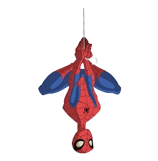
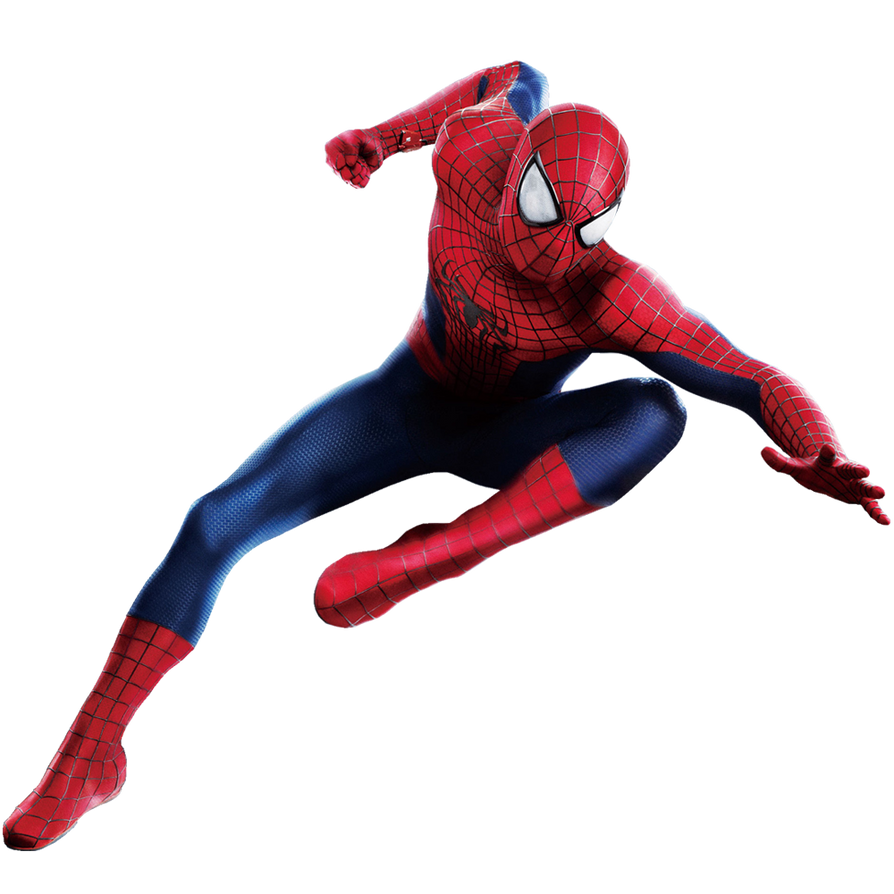
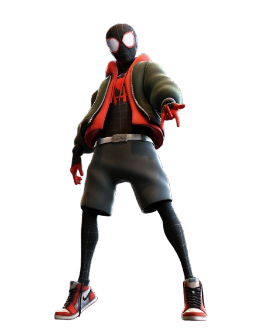
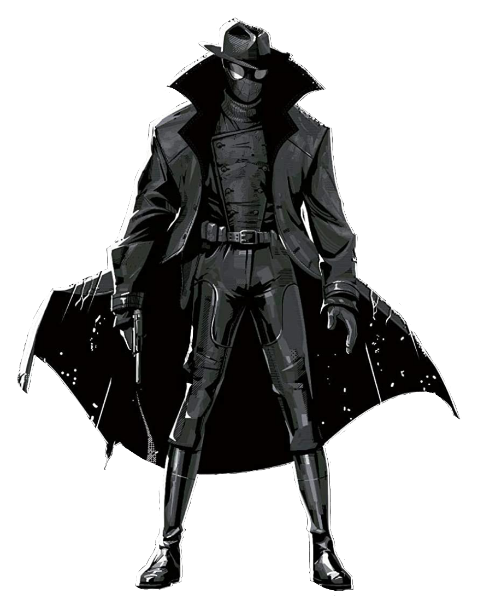
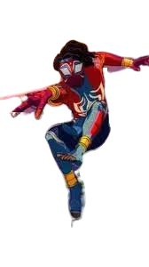

| Story | Image | Voice Actor/Actor |
|---|---|---|
| Spectacular Spider-Man: Has the classic Spider-Man story. He gets bit by a radioactive spider and continues through everyday life as Spider-Man and a high school student. |  | Josh Keaton |
| Andrew Garfield's Spiderman: Has the classic Spider-Man story. He gets bit by a radioactive spider and continues through everyday life as Spider-Man and a high school student. |  | Andrew Garfield |
| Miles Morales: Known as the 2nd Spider-Man to appear where he has to fill in the shoes of the original Spider-Man. |  | Shameik Moore Nadji Jeter |
| Spider-Noir: Raised by his Aunt May and Uncle Ben during the Great Depression until he finds the corpse of his uncle. Seeking revenge, he uses his spidey powers and his investigative intelligience to fight crime. |  | Nicolas Cage |
| Indian Spider-Man: Pavitr Prabhakar easily spends his everyday life taking down bad guys in his village alongside his normal life. |  | Karan Soni |